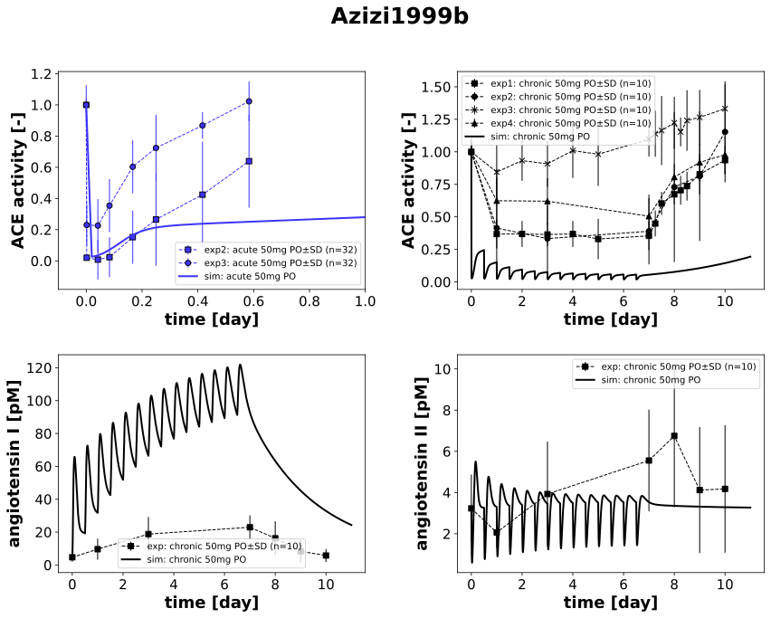

|  |
../../../../experiments/studies/azizi1999b.py
"""Azizi1999b"""
from copy import deepcopy
from typing import Dict, Tuple, List, Hashable
import numpy as np
from sbmlsim.data import DataSet, load_pkdb_dataframe
from sbmlsim.fit import FitMapping, FitData
from sbmlutils.console import console
from pkdb_models.models.captopril.experiments.base_experiment import (
CaptoprilSimulationExperiment,
)
from pkdb_models.models.captopril.experiments.metadata import Tissue, Route, Dosing, Health, Fasting, PKPDData,\
CaptoprilMappingMetaData
from sbmlsim.plot import Axis, Figure
from sbmlsim.simulation import Timecourse, TimecourseSim
from pkdb_models.models.captopril.helpers import run_experiments
class Azizi1999b(CaptoprilSimulationExperiment):
"""Simulation experiment for Azizi1999b.
Investigation of the contribution of angiotensin-converting enzyme (ACE) and glomerular filtration to creating
1 the new metabolic balance of the hemoregulatory peptide N-acetyl-seryl-aspartyl-lysyl-proline (AcSDKP) that
occurs during acute and chronic ACE inhibition.
"""
dosing_regimen: list[str]
measurement_type: list[str]
dose = 50
ang = {
"ang1": 6.03,
"ang2": 3.38,
}
marker = {
"exp1": "s",
"exp2": "o",
"exp3": "x",
"exp4": "^",
"exp5": "*",
"exp6": "d"
}
routes = "PO"
elements_unique = ["relative ACE activity", "_angiotensin I_", "_angiotensin II_"]
def datasets(self) -> dict[str, DataSet]:
dsets = {}
self.reset_state()
self.dosing_regimen = []
self.measurement_type = []
for fig_id in ["Fig1", "Fig2", "Tab1"]:
df = load_pkdb_dataframe(f"{self.sid}_{fig_id}", data_path=self.data_path)
for label, df_label in df.groupby("label"):
dset = DataSet.from_df(df_label, self.ureg)
for element in self.elements_unique:
if element in label:
self.data_collection(element=element, label=label)
dset.unit_conversion(
self.data_type, self.conversion_factor
)
dsets[f"{label}"] = dset
if "CAP50m" in label:
self.dosing_regimen.append("chronic")
else:
self.dosing_regimen.append("acute")
if "ACE" in label:
if "calculated" in label:
self.measurement_type.append("2")
elif "cushman" in label:
self.measurement_type.append("3")
elif "nussberger" in label:
self.measurement_type.append("4")
else:
self.measurement_type.append("1")
break
#console.print(dsets.keys())
#console.print(dsets)
return dsets
def simulations(self) -> Dict[str, TimecourseSim]:
# for what?
Q_ = self.Q_
tcsims = {}
# acute dose
tcsims[f"cap_{self.routes}_{self.dose}_acute"] = TimecourseSim(
Timecourse(
start=0,
end=24 * 60 * 8, # minutes
steps=400,
changes={
**self.default_changes(),
f"{self.routes}DOSE_cap": Q_(self.dose, "mg"),
},
)
)
# chronic dosing
tc_start = Timecourse(
start=0,
end=12*60, # minutes
steps=400,
changes={
**self.default_changes(),
f"{self.routes}DOSE_cap": Q_(self.dose, "mg"),
f"[ang1]": Q_(self.ang["ang1"], "pg/ml") / self.Mr.ang1,
f"[ang2]": Q_(self.ang["ang2"], "pg/ml") / self.Mr.ang2,
f"ang1_ref": Q_(self.ang["ang1"], "pg/ml") / self.Mr.ang1,
f"ang2_ref": Q_(self.ang["ang2"], "pg/ml") / self.Mr.ang2
},
)
tc = Timecourse(
start=0,
end=12 * 60, # minutes
steps=400,
changes={
**self.default_changes(),
f"{self.routes}DOSE_cap": Q_(self.dose, "mg"),
},
)
tc_end = Timecourse(
start=0,
end=24 * 60 * 4, # minutes
steps=400,
changes={
**self.default_changes(),
f"{self.routes}DOSE_cap": Q_(0, "mg"),
},
)
tcsims[f"cap_{self.routes}_{self.dose}_chronic"] = TimecourseSim(
timecourses=[tc_start] + [deepcopy(tc) for _ in range(13)] + [tc_end], # 7 days two times per day
)
return tcsims
def fit_mappings(self) -> Dict[str, FitMapping]:
mappings = {}
for kr, dset_id in enumerate(self.clabels):
element = self.element_ids[kr]
dosing = self.dosing_regimen[kr]
mappings[f"fm_capPO_{self.dose}{element}_plasma_{dosing}_all"] = (
FitMapping(
self,
reference=FitData(
self,
dataset=dset_id,
xid="time",
yid="mean",
yid_sd="mean_sd",
count="count",
),
observable=FitData(
self,
task=f"task_cap_{self.routes}_{self.dose}_{dosing}",
xid="time",
yid=self.yids[kr],
),
metadata=CaptoprilMappingMetaData(
tissue=Tissue.PLASMA,
route=Route.PO,
dosing=Dosing.SINGLE if dosing == "acute" else Dosing.MULTIPLE,
health=Health.HEALTHY,
fasting=Fasting.NR,
data=PKPDData.PD
),
)
)
# console.print(mappings)
return mappings
def figures(self) -> Dict[str, Figure]:
return {
#**self.pk_figures(),
**self.pd_figures()
}
def pk_figures(self) -> Dict[str, Figure]:
yids_unique = ["[Cve_cap]", "[Cve_captot]"]
fig = Figure(
experiment=self,
sid="PK",
num_rows=2,
num_cols=2,
name=f"{self.__class__.__name__}",
)
plots = fig.create_plots(
xaxis=Axis(self.labels["time"], unit="day"), legend=True
)
for ky, yid_unique in enumerate(yids_unique):
plots[ky].set_yaxis(self.labels[yid_unique], unit=self.units[yid_unique])
plots[ky].xaxis.max = 1
plots[ky].xaxis.min = -0.1
plots[ky+2].set_yaxis(self.labels[yid_unique], unit=self.units[yid_unique])
for dosing, idx in zip(["acute", "chronic"], [0, 2]):
# simulation
plots[ky+idx].add_data(
task=f"task_cap_{self.routes}_{self.dose}_{dosing}",
xid="time",
yid=yid_unique,
label=f"sim: {dosing} {self.dose}mg PO",
color=self.colors[dosing],
)
return {fig.sid: fig}
def pd_figures(self) -> Dict[str, Figure]:
yids_unique = ["ace_activity", "ace_activity", "[ang1]", "[ang2]"]
fig = Figure(
experiment=self,
sid="PD",
num_rows=2,
num_cols=2,
name=f"{self.__class__.__name__}",
)
plots = fig.create_plots(
xaxis=Axis(self.labels["time"], unit="day"), legend=True
)
for ky, yid_unique in enumerate(yids_unique):
plots[ky].set_yaxis(self.labels[yid_unique], unit=self.units[yid_unique])
if ky == 0:
plots[ky].xaxis.max = 1
plots[ky].xaxis.min = -0.1
kexp = 1
for k, yid in enumerate(self.yids):
if yid == yid_unique:
if (yid == "ace_activity" and self.dosing_regimen[k] == "chronic" and ky != 1) or (
yid == "ace_activity" and self.dosing_regimen[k] == "acute" and ky != 0):
continue
# dataset
plots[ky].add_data(
dataset=self.clabels[k],
xid="time",
yid="mean",
yid_sd="mean_sd",
count="count",
label=f"exp{self.measurement_type[k]}: {self.dosing_regimen[k]} {self.dose}mg PO" if yid_unique=="ace_activity" else f"exp: {self.dosing_regimen[k]} {self.dose}mg PO",
color=self.regimen_colors[self.dosing_regimen[k]],
marker=self.marker[f"exp{kexp}"],
)
kexp += 1
# simulation
if ky == 0:
dosing = "acute"
else:
dosing = "chronic"
plots[ky].add_data(
task=f"task_cap_{self.routes}_{self.dose}_{dosing}",
xid="time",
yid=yid_unique,
label=f"sim: {dosing} {self.dose}mg PO",
color=self.regimen_colors[dosing],
)
return {fig.sid: fig}
if __name__ == "__main__":
run_experiments(Azizi1999b, output_dir=Azizi1999b.__name__)
{kind=link}